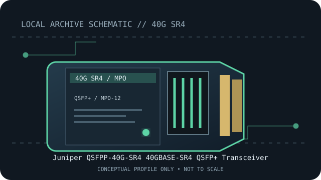

[ MODEL-SPECIFIC NETWORK HARDWARE RECORD ]
Juniper QSFPP-40G-SR4 40GBASE-SR4 QSFP+ Transceiver
Juniper-qualified parallel 40GbE SR4 QSFP+ optic for MMF. Exact PID, host qualification and optical channel specifications should be checked before deployment.

IDENTIFICATION: Match the module label, vendor part number and revision to the manufacturer's documentation. Nominal link rate and maximum reach are specifications, not measured throughput or a guarantee for every installed channel.
Model-specific specifications and compatibility
| Subcategory | SFP transceivers: optical and copper |
|---|---|
| Exact product/model | Juniper QSFPP-40G-SR4 40GBASE-SR4 QSFP+ Transceiver |
| Form factor | QSFP+, hot-pluggable four-lane 40GbE optical transceiver; Juniper QSFPP-40G-SR4 family. |
| Optical interface | 40GBASE-SR4; four parallel 850nm optical lanes, 40Gb/s aggregate. |
| Nominal rate (not measured) | 40Gb/s aggregate Ethernet rate over four parallel lanes. |
| Wavelength and reach | Juniper HCT lists up to 100m on OM3 multimode fiber; OM4 reach may be higher only where the exact module/platform qualification allows. |
| Connector and fiber type | MPO-12; multimode fiber (MMF). |
| Host coding and compatibility caveat | Juniper qualification is exact-module and platform-specific. Check QSFPP-40G-SR4 in HCT for the chassis, interface and software release before installation. MPO polarity, lane mapping and any breakout mode must also be supported by the host configuration. |
| Variant / deployment caveat | The HCT qualified configuration is authoritative; do not assume an OM4 extended reach or breakout mode from a generic standard alone. |
| Measured throughput | No bench result is claimed. Actual payload throughput depends on the host, link partner, protocol overhead and test method. |
Host qualification and installation notes
Juniper qualification is exact-module and platform-specific. Check QSFPP-40G-SR4 in HCT for the chassis, interface and software release before installation. MPO polarity, lane mapping and any breakout mode must also be supported by the host configuration.
The HCT qualified configuration is authoritative; do not assume an OM4 extended reach or breakout mode from a generic standard alone.
Check both endpoint modules, fiber grade, polarity, connector cleanliness and host port configuration. Verify the exact transceiver PID and revision against the current manufacturer compatibility source before placing the link in service.
Archival, ESD and fiber-safety notes
Record the exact PID, hardware revision, host port, firmware/software release and available digital optical diagnostics. Store the module in ESD-safe packaging with dust caps fitted. Never look into an active fiber or transceiver aperture.
Manufacturer sources
- Juniper 40G Qualified OpticsJuniper-qualified 40G optics product-family documentation.
- Juniper QSFPP-40GBASE-SR4 Hardware Compatibility Tool entryExact component entry with supported chassis and module details.
- Juniper Optic Modules Data SheetOfficial technical reference for Juniper optical modules.
Manufacturer compatibility varies by host, release, module coding and product revision. Consult the exact product source and current host qualification before use.